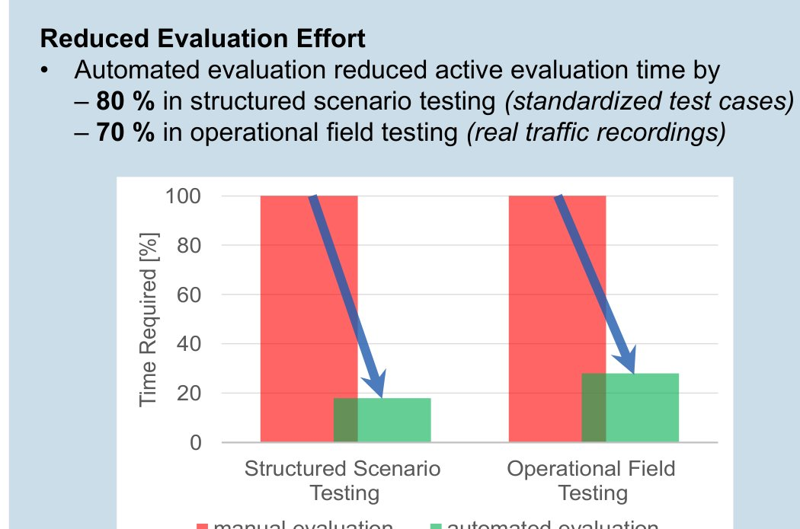
AI-based Video Analysis
A Python tool that automatically evaluates test videos using YOLO-based object detection. It replaces manual frame-by-frame review and cut the analysis effort by up to 80 %.
Test Engineer · Mechanical Engineering · Analog Photography
I test, document, and evaluate. Just what an engineer does. In between, I expose 36 frames on film.
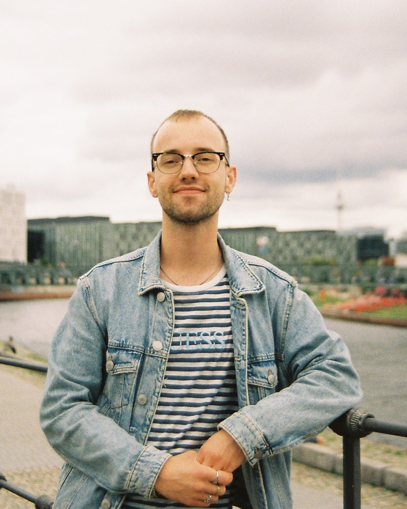
Mechanical engineering master's student with a hands-on background as a trained automotive mechatronics technician.
I started out with a four-year apprenticeship in a Swiss workshop, then moved on to study automotive engineering in Cologne. Today I'm doing my master's in mechanical engineering in Düsseldorf and working in R&D at ABB in Ratingen.
My work revolves around test setups – from preparation and execution to analysis and documentation. I've helped build and commission test rigs, tested engines, heat pumps, compressors and safety-relevant chassis components, and validated driver assistance functions. I analyse measurement data in a structured way and automate the analysis wherever it pays off, mostly with Python and MATLAB.
Working student in the research & development department at the Ratingen site.
Four-year vocational training in Switzerland, completed with the Federal VET Diploma (EFZ).
Thesis on AI-based automated video analysis, written at AVL-Schrick.
Equivalent to the German Fachhochschulreife, completed alongside the apprenticeship.

A Python tool that automatically evaluates test videos using YOLO-based object detection. It replaces manual frame-by-frame review and cut the analysis effort by up to 80 %.
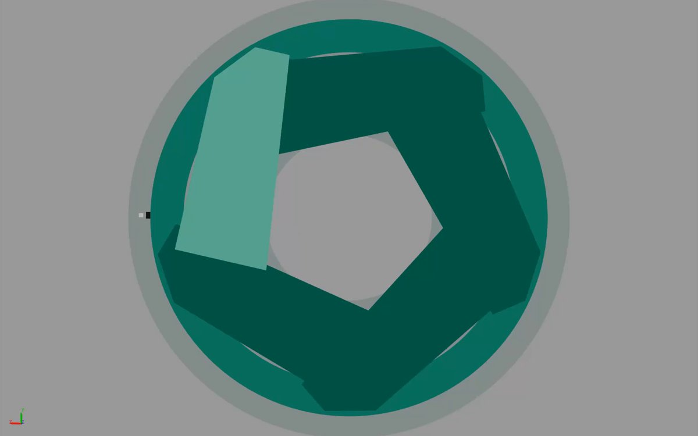
A 1984 Canon T70 rebuilt in Simscape Multibody: shutter, focus, aperture and film transport – seven degrees of freedom, each result checked against hand calculations and published data.
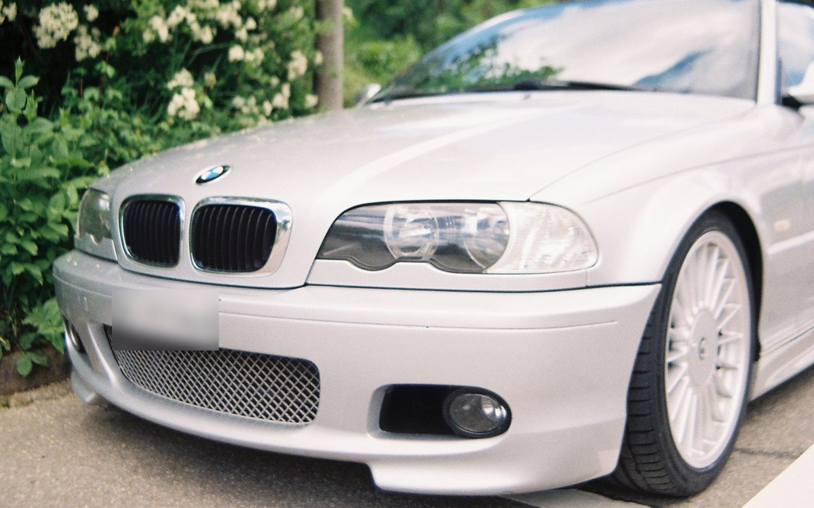
My 2002 convertible, owned since 2018 and kept on the road with my own hands: a new sound system, ST coilovers, Alpina wheels and a long list of repairs.
Shot on film, 35 mm. Click an image to enlarge.
All photos © Jo Patrick Scheifele – please don't use them without asking.
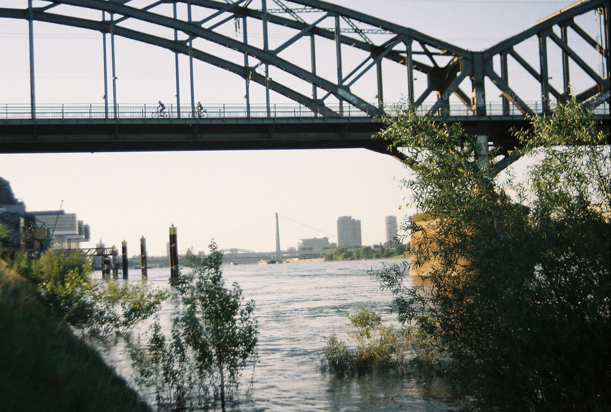
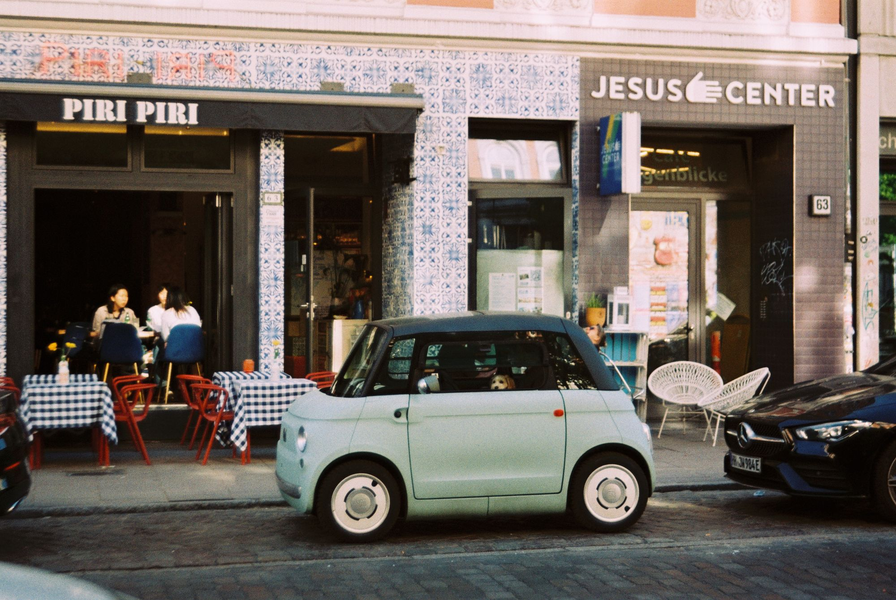
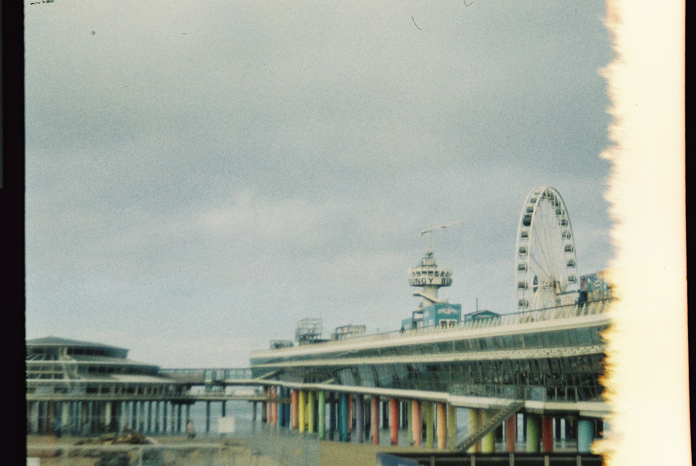
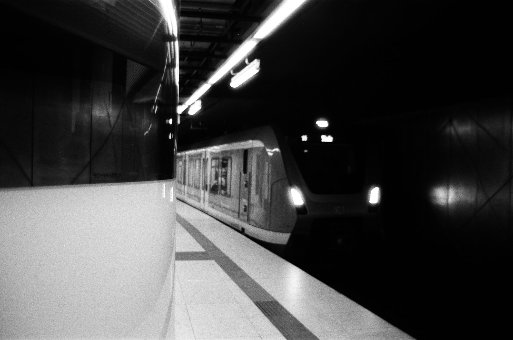
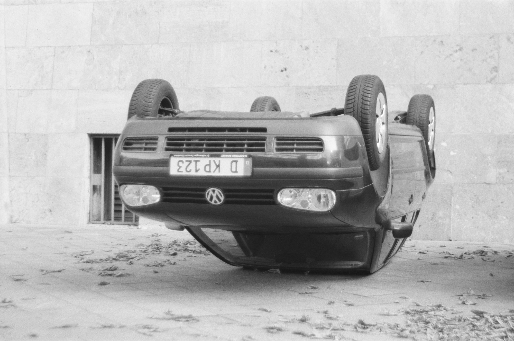
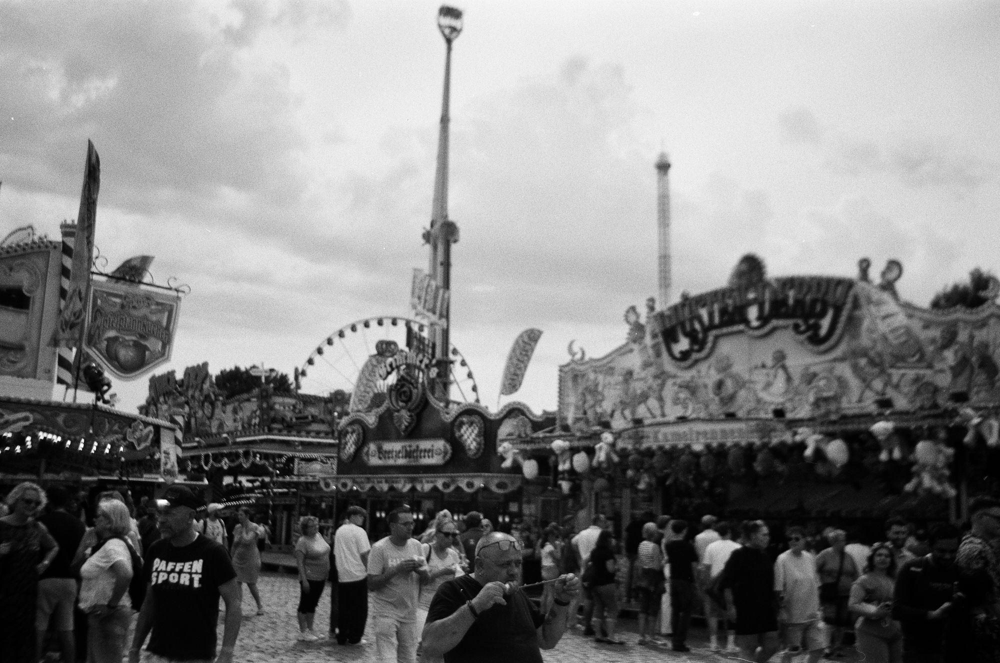
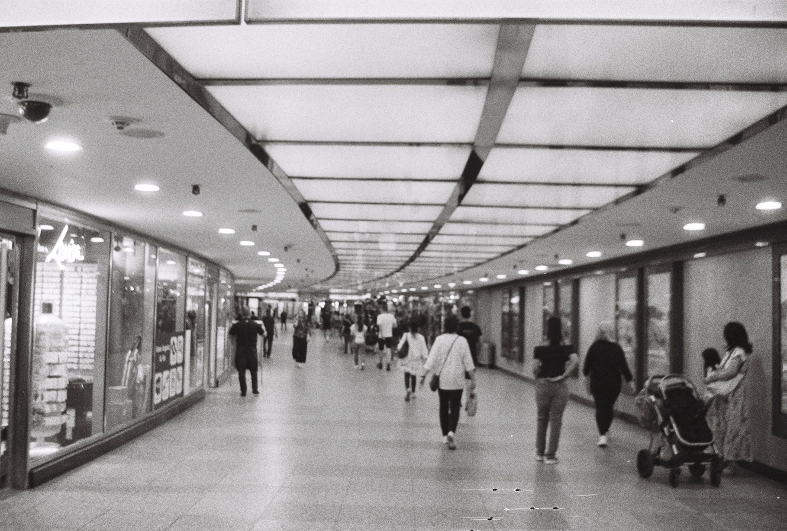
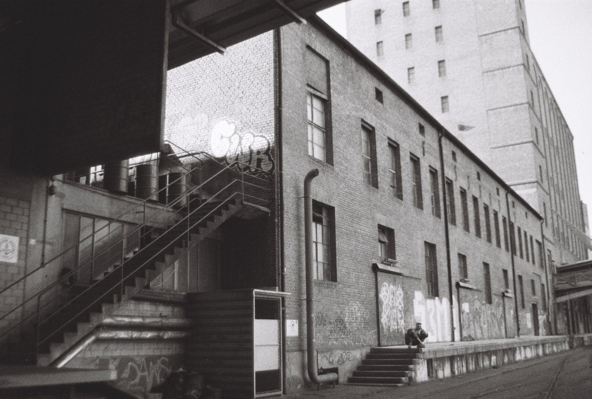
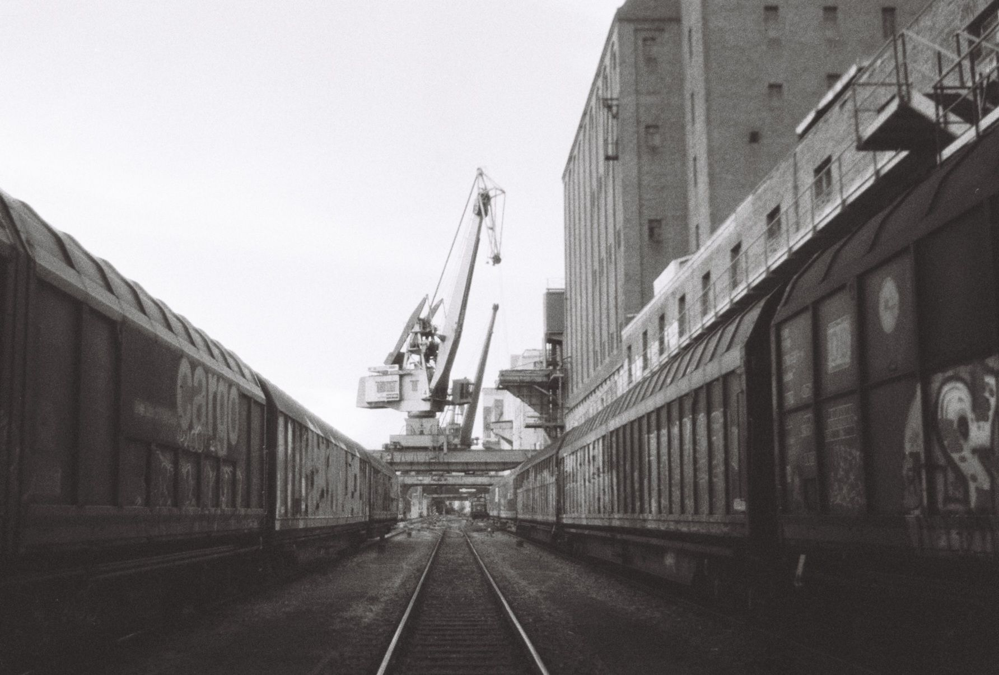
Open to R&D projects, master's thesis opportunities and interesting test challenges. Or just drop me a line to talk about film.
jo.patrick.scheifele